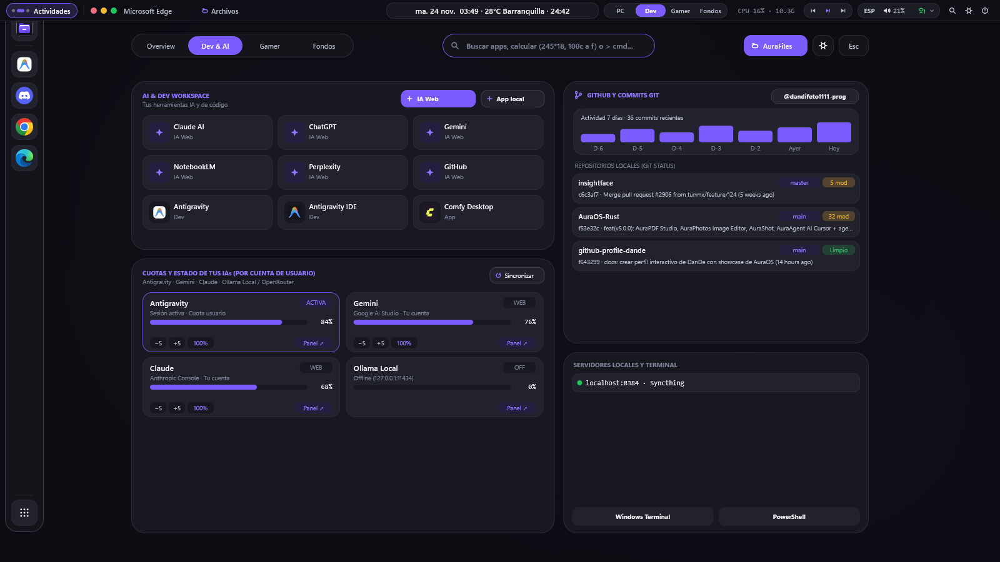
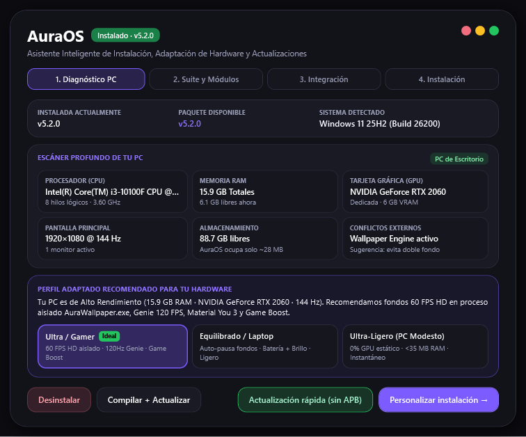
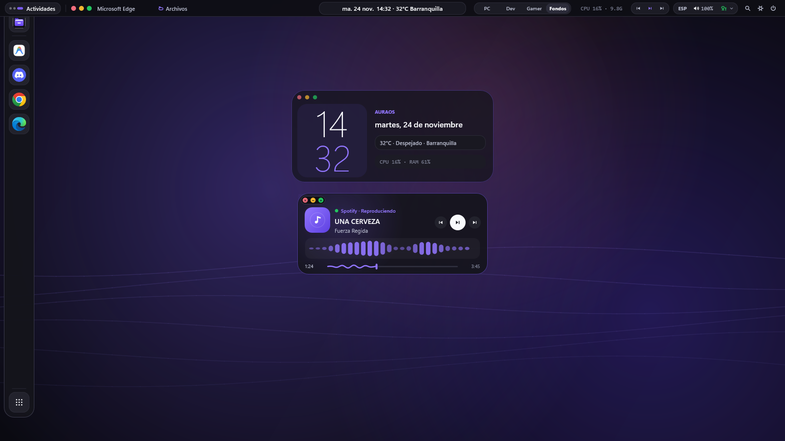

SISTEMAS · POWERSHELL · CI/CD
Release v5.2.2 · Open Source
AuraOS — Suite Nativa & Automatización Windows 11
Entorno de escritorio híbrido escrito en Rust puro + Direct2D sobre Windows 11, acompañado de un motor de automatización de despliegue en PowerShell y pipelines CI/CD en GitHub Actions.
Automatización & DevOps Implementado
- • Instalador Inteligente (`AuraShell-Setup.exe`): Escaneo automático de hardware (CPU, RAM, GPU/VRAM, Hz, conflictos) y descarga automatizada de releases desde GitHub.
- • Scripts PowerShell (`scripts/`): Automatización de configuración de sistema, planes de energía (`powercfg`), servicios, registro y reversión segura instantánea.
- • CI/CD con GitHub Actions: Compilación automatizada, empaquetado modular de 11 binarios (`app/`) y publicación de releases.
Integración IA & Arquitectura
- • Dev & AI Hub: Panel centralizado que monitorea cuotas de APIs de IA (Gemini, Claude, Ollama, OpenRouter), commits de GitHub (7d) y estado de repositorios Git locales.
- • Rendimiento Extremo: Shell principal en ~20–30 MB de RAM y 0% CPU en reposo; procesos aislados (`AuraWallpaper.exe` DXVA 60 FPS).
- • Suite Modular: `AuraShell`, `AuraSettings`, `AuraLock`, `AuraFiles`, `AuraBeats DAW`, `AuraShot OCR`, entre otros.
Flujo de Arquitectura & Entrega CI/CD
GitHub Actions CI/CD
→
AuraShell-Setup.exe (HW Scan)
→
PowerShell Automation
→
11 Binarios Rust + Dev & AI Hub




PowerShell
GitHub Actions (CI/CD)
Rust
Direct2D / Win32 API
Git